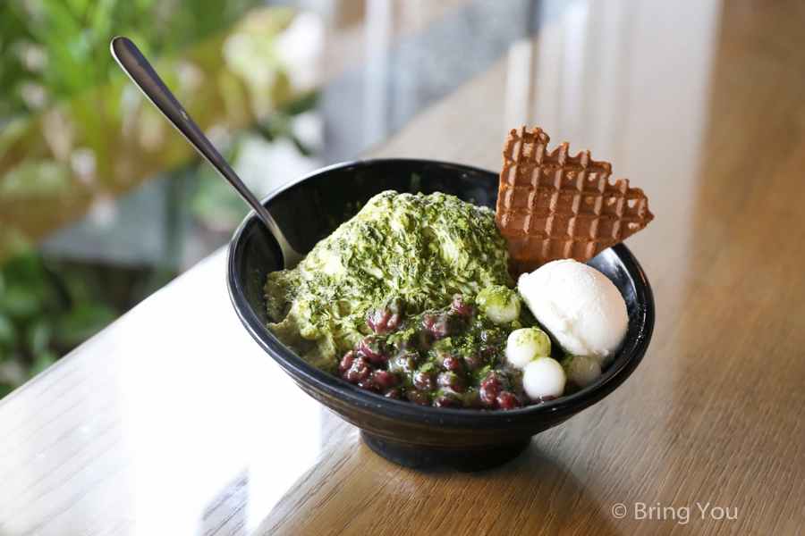
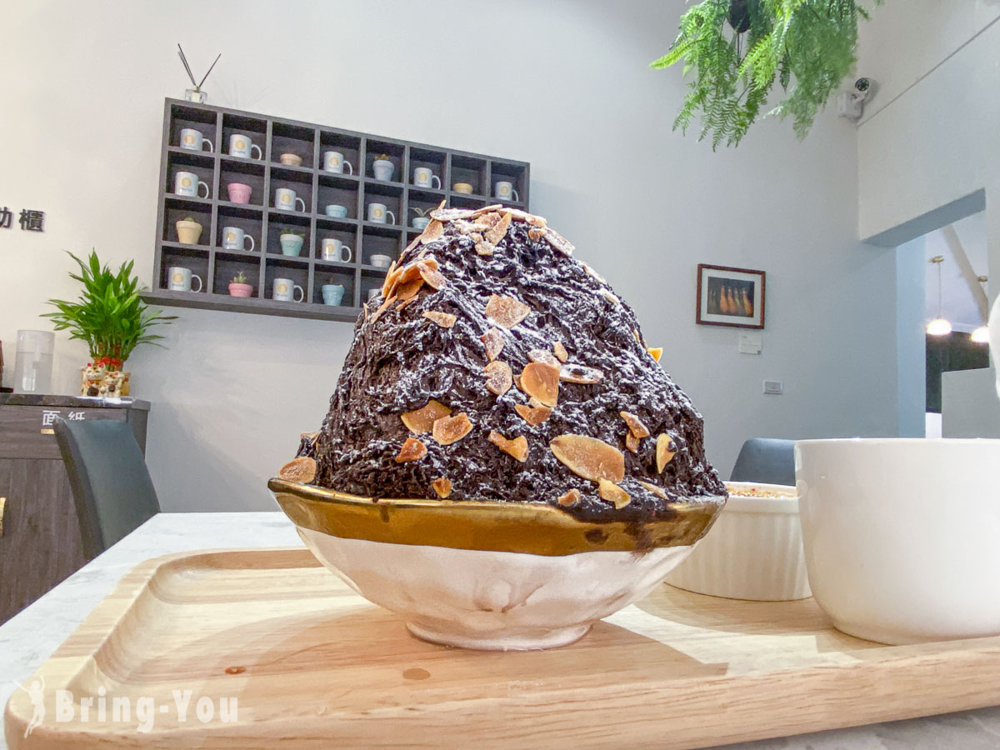

高雄好吃冰品推薦】鳳山 ICE+ 艾司加冰屋，使用台灣在地水果製作的那瑪夏烏龍佐紅豆雪花冰！

【ICE+ 艾司加冰屋】販售有刨冰、雪花思諾（雪花冰）、冰淇淋、冰棒、茶飲等冰品，其中飄兒推薦必點的是雪花司諾『大地系』
都是採用台灣在地水果與茶類製作的冰磚，口味上不僅有特色，而且真的都挺好吃的，
這次飄兒吃到的『玉荷包雪花司諾』、『那瑪夏烏龍佐紅豆雪花司諾（醇厚抹茶）』就超優！
【ICE+ 艾司加冰屋】有一個很酷的理念，便是給客人吃到的東西堅持儘量100%自己製作，
無論是雪花冰的冰磚、冰淇淋、手工薄餅都是自己手工製作(當天我們吃到的食材裡只有白玉不是自製)，
捨棄化學人工製品，採用水果、茶等更忠於食物本身的天然原味製作冰品，就是希望賣自己都能吃的安心的食品
【高雄下午茶】ROSE HOUSE CAFÉ夢時代店-古典玫瑰園高CP值下午茶饗宴
 說到高雄夢時代推薦的下午茶餐廳，Rose House cafe絕對是推薦的前幾名，開放式的空間，明亮的裝潢設計，
少了一般咖啡廳深色圍牆的嚴肅，多了一點輕鬆自在，白話一點就是親近感，讓人不自覺得就想走上前去瞧瞧有哪些小點心。
座位分配在靠落地窗一面，外頭就是綠化造景，營造出一種雖然身處都市，
但卻能體會到自然的氛圍。走累的我們，二話不說，趕緊入座點餐。
古典玫瑰園Rose House Café的餐點有舒芙蕾鬆餅、蛋糕以及精品咖啡，也少不了品牌強項的茶飲系列，從精選台灣茶到英國茶都有，
當然了若不想要有咖啡因的飲料，也可以選擇繽紛氣泡飲系列。
主打的舒芙蕾鬆餅，口味有北海道原味奶霜、京都宇治抹茶紅豆、粉紅草莓奶霜，特別選用來自日本神奈川縣的鑽石低筋麵粉，
搭配大日本明治製糖公司的精選上白糖，不加任何添加物揉成麵團去烘烤。奶霜則是使用來自北海道十勝產區酪農所生產的「北海道十勝奶霜」，
每一份都是現點現做，保證Q度與熱度。
說到高雄夢時代推薦的下午茶餐廳，Rose House cafe絕對是推薦的前幾名，開放式的空間，明亮的裝潢設計，
少了一般咖啡廳深色圍牆的嚴肅，多了一點輕鬆自在，白話一點就是親近感，讓人不自覺得就想走上前去瞧瞧有哪些小點心。
座位分配在靠落地窗一面，外頭就是綠化造景，營造出一種雖然身處都市，
但卻能體會到自然的氛圍。走累的我們，二話不說，趕緊入座點餐。
古典玫瑰園Rose House Café的餐點有舒芙蕾鬆餅、蛋糕以及精品咖啡，也少不了品牌強項的茶飲系列，從精選台灣茶到英國茶都有，
當然了若不想要有咖啡因的飲料，也可以選擇繽紛氣泡飲系列。
主打的舒芙蕾鬆餅，口味有北海道原味奶霜、京都宇治抹茶紅豆、粉紅草莓奶霜，特別選用來自日本神奈川縣的鑽石低筋麵粉，
搭配大日本明治製糖公司的精選上白糖，不加任何添加物揉成麵團去烘烤。奶霜則是使用來自北海道十勝產區酪農所生產的「北海道十勝奶霜」，
每一份都是現點現做，保證Q度與熱度。
【高雄冰店推薦】冰塔 華榮店｜手作雪花冰專賣店

冰塔在高雄有新堀江商圈「文化店」，從高雄捷運中央公園站走路只要7分鐘，是地點最好的分店；還有「鳳山店」，從高雄捷運鳳山站走路2分鐘。
冰塔在裝潢上是走年輕人喜歡的IG網美冰店風格，每一間分店都是打卡景點，像最紅的文化店就有乾燥花牆座位可以拍照，而我這次吃的「華榮店」也是文青風。
冰塔的雪花冰所有口味，冰吃起來都很細緻，感覺既紮實，又帶有雪花冰的綿密感，店家採購的機器應該很好。
巧克力吃起來能感受到使用的巧克力品質很棒，也不會太甜，味道濃郁，但吃多了也不會很膩。